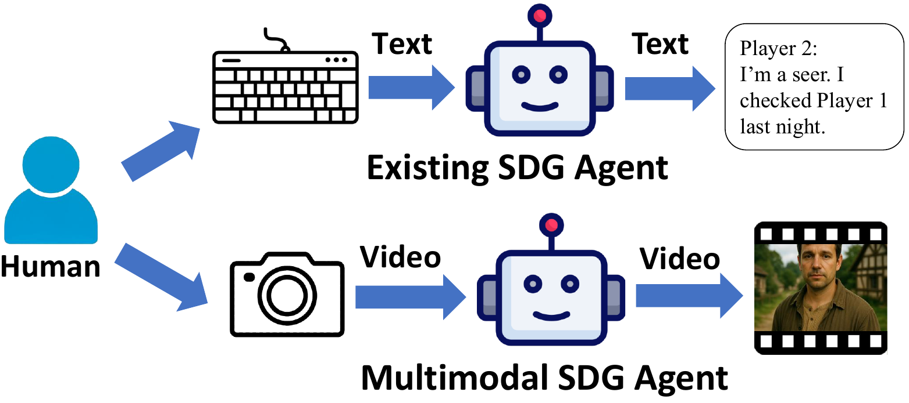
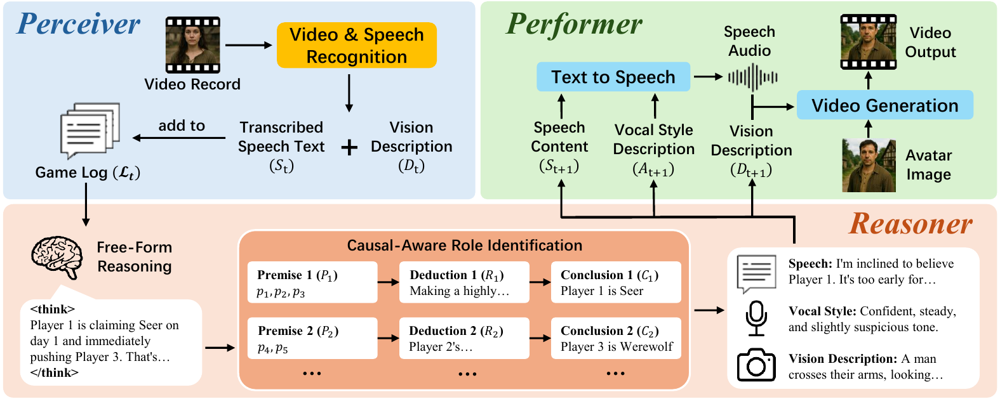
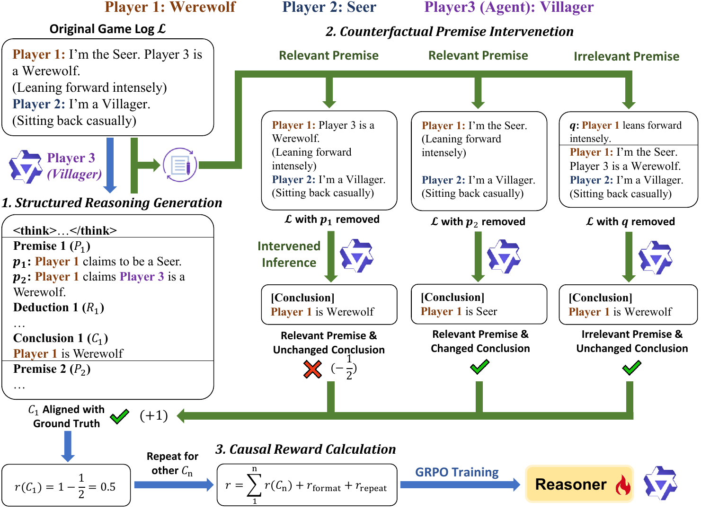

Social deduction games (SDGs) such as Werewolf have become challenging testbeds for AI agents, requiring complex social skills such as reasoning, deception, and collaboration. While recent advances in large language models (LLMs) have driven significant progress in SDG agents, current approaches are predominantly text-based, overlooking the multimodal nature that is fundamental to human social interaction.
To bridge this gap, we introduce CaM-Wolf, the first SDG agent that integrates multimodal perception and generation. CaM-Wolf processes video inputs from other players, employs a causal-aware Reasoner trained via reinforcement learning to establish logical chains between observable behaviors and hidden roles, and presents itself through an animated avatar. Our experiments and user study show that CaM-Wolf achieves superior gameplay performance and enhances the quality of human-AI interaction, representing a significant advancement towards more human-like AI agents capable of participating in nuanced social dynamics.

Existing SDG agents are constrained to purely textual information: humans must type their statements and read agents' responses on screen — a paradigm that diverges substantially from natural human communication.
CaM-Wolf captures human players' video input during their speeches — speech content, facial expressions, and gestures — and generates video responses through an animated avatar, enabling authentic multimodal social deduction.
CaM-Wolf consists of three modules that enable multimodal social deduction gameplay: a Perceiver that converts video inputs into structured text, a causal-aware Reasoner trained with counterfactual intervention rewards, and a Performer that presents responses through an animated avatar.

The overall framework of CaM-Wolf. The Perceiver processes video inputs from human players, extracting transcribed speech text and vision descriptions. The Reasoner conducts causal-aware role identification and generates responses. The Performer presents the responses through an animated avatar.

The Reasoner's training process. The Reasoner first generates structured reasoning with explicit premise-deduction-conclusion chains. Counterfactual premise intervention then removes relevant and irrelevant premises from the game log and re-infers the same player's role: if the conclusion changes, the removed premise is genuine causal evidence; otherwise it is spurious. Causal rewards computed from these interventions optimize the model with GRPO.
Converts video inputs from human players into speech transcriptions and vision descriptions (facial expressions, gestures) with Qwen2.5-Omni, building a structured multimodal game log.
Generates explicit premise-deduction-conclusion role identifications, trained via GRPO with counterfactual premise-intervention rewards for faithful, evidence-grounded reasoning.
Synthesizes expressive speech with EmotiVoice and renders a talking-avatar video with OmniAvatar, delivering natural and immersive multimodal responses.
Human vs. AgentsA human player speaks via video; agents perceive speech, expressions, and gestures, then respond through animated avatars.
Agent vs. AgentA full Werewolf game between CaM-Wolf agents, each presented through its own realistic talking avatar.
Cartoon AvatarsThe same gameplay with stylized cartoon avatars — the avatar design is fully customizable.
@inproceedings{zhang2026camwolf,
title={CaM-Wolf: Causal-Aware Multimodal Agents for Social Deduction Games},
author={Zhang, Zheng and Yao, Nanjie and He, Jiarui and Ye, Deheng and Zhao, Peilin and Wang, Hao},
booktitle={34th ACM International Conference on Multimedia},
year={2026},
url={https://openreview.net/forum?id=djnKfsiN3p}
}